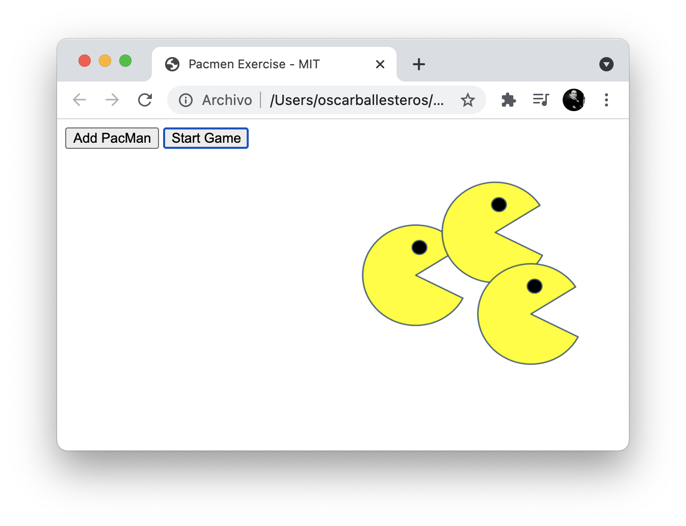
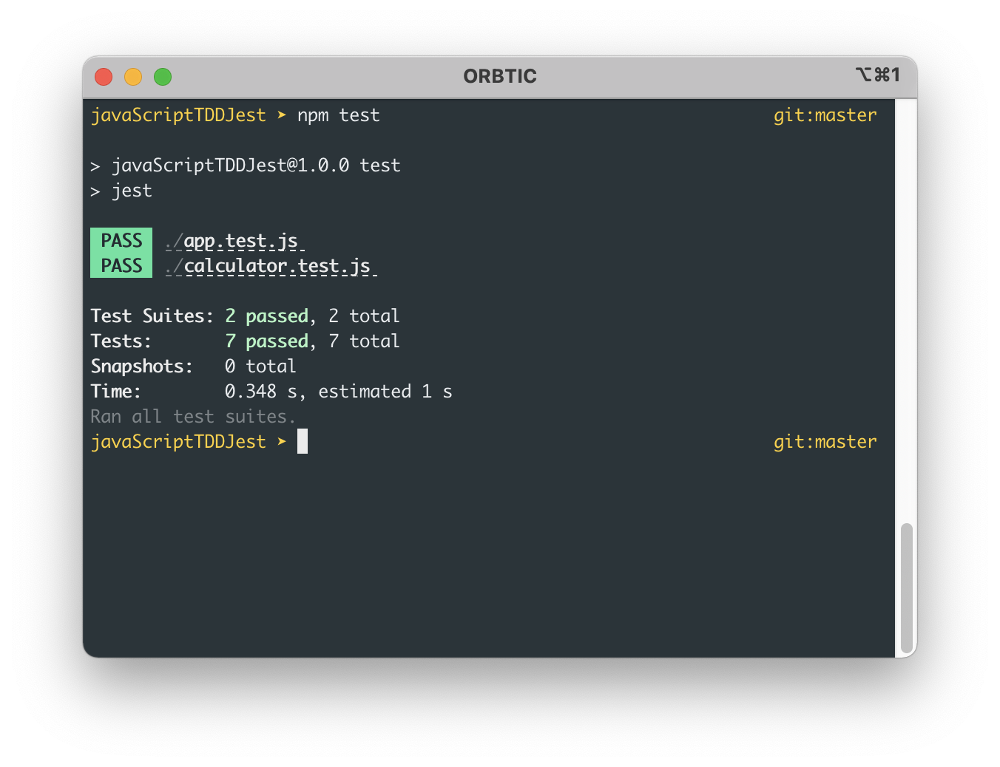

Profesional en medios audiovisuales e Ingeniero informático, con tres años de experiencia como full-stack, especificamente con Ruby y RubyOnRails. Se me facilita el trabajo en equipo, me caracterizo por ser proactivo y siempre buscar el aprendizaje. Mis principales habilidades son la creatividad, la adaptabilidad al cambio y la perseverancia.
Me gusta asumir un alto nivel de compromiso en todas las responsabilidades, respondiendo eficaz y oportunamente a lo solicitado.
Aquí podras conocer algunos de los trabajos realizados y también algunos proyectos donde he participado con otros miembros de equipos de desarrollo.
Jest Test

Profesional en medios audiovisuales e Ingeniero informático, con tres años de experiencia como full-stack, especificamente con Ruby y RubyOnRails. Se me facilita el trabajo en equipo, me caracterizo por ser proactivo y siempre buscar el aprendizaje. Mis principales habilidades son la creatividad, la adaptabilidad al cambio y la perseverancia.
Me gusta asumir un alto nivel de compromiso en todas las responsabilidades, respondiendo eficaz y oportunamente a lo solicitado.
Aquí podras conocer algunos de los trabajos realizados y también algunos proyectos donde he participado con otros miembros de equipos de desarrollo.